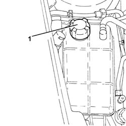
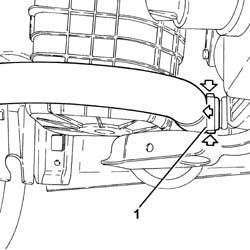
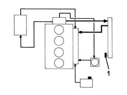
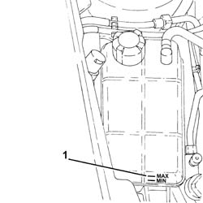
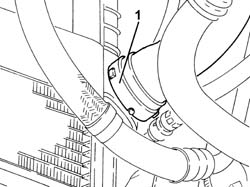
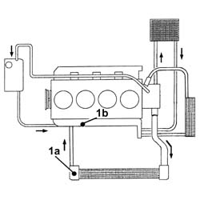
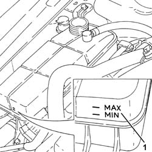
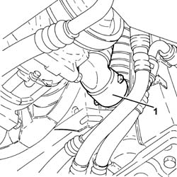
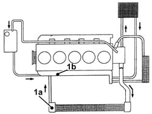
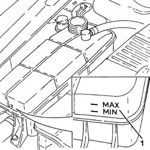

0010T20 coolant change
- Path
- Procedures > 00 MAINTENANCE > 0010 NEW UNITS AND PLANNED MAINTENANCE'. > 0010T vehicle oil and fluids > 0010T20 coolant change
- Kind
- repair procedure (removal / refitting; the operation number is the code)
- Applies to
- engines: 1.6 TS , 1.8 TS, 2.0 JTS, 2.5 V6, 3.2 V6, 1.9 JTD 8v , 1.9 JTD 16v, 2.0 JTS, 2.4 JTD 10v, 2.4 JTD 20v; all production periods
- Interactive page
- https://sloeber94.github.io/elrnDB-a156/en/#/3237407
Applies to: engines: 1.6 TS , 1.8 TS, 2.5 V6, 3.2 V6, 1.9 JTD 8v , 2.4 JTD 10v; all production periods
Position the vehicle on the ramp.
Remove the expansion tank cap.
Raise the car.
Disconnect the radiator coolant outlet hose and drain the coolant into a suitable container.
Connect the radiator coolant outlet hose.
Lower the vehicle.
Applies to: engines: 1.6 TS , 1.8 TS; all production periods
Refill the engine cooling system with coolant.
 | Type | Component | Name | Qty. |
|---|---|---|---|---|
- | Fluid [l] | ENGINE COOLING CIRCUIT | Mixture 50% Paraflu11 for Alfa Romeo/distilled water | 6.9 |
Applies to: engines: 2.5 V6, 3.2 V6; all production periods
Refill the engine cooling system with coolant.
| Type | Component | Name | Qty. |
|---|---|---|---|---|
- | Fluid [l] | ENGINE COOLING CIRCUIT | Mixture 50% Paraflu11 for Alfa Romeo/distilled water | 9.2 |
Applies to: engines: 1.9 JTD 8v ; all production periods
Refill the engine cooling system with coolant.
| Type | Component | Name | Qty. |
|---|---|---|---|---|
- | Fluid [l] | ENGINE COOLING CIRCUIT | Mixture 50% Paraflu11 for Alfa Romeo/distilled water | 6.1 |
Applies to: engines: 2.4 JTD 10v; all production periods
Refill the engine cooling system with coolant.
| Type | Component | Name | Qty. |
|---|---|---|---|---|
- | Fluid [l] | ENGINE COOLING CIRCUIT | Mixture 50% Paraflu11 for Alfa Romeo/distilled water | 6.8 |
Start the engine and bring it up to working temperature so that the thermostat opens and releases the residual air contained in the system.
With the engine cold, top up the level to the MAX mark on the expansion tank.
Remove the car from the ramps.
Applies to: engines: 2.0 JTS, 2.0 JTS; all production periods
Position the vehicle on the ramp.
1. Undo the engine coolant reservoir cap.

Applies to: engines: 2.0 JTS, 2.0 JTS; all production periods
Proceed with removal 7055B54 under-engine guard - r r .
1. Disconnect the lower coolant outlet hose from the radiator and drain the engine coolant.

Applies to: engines: 2.0 JTS, 2.0 JTS; all production periods
1. Open the bleed screw on the radiator completely.

Applies to: engines: 2.0 JTS, 2.0 JTS; all production periods
Connect the lower coolant outlet hose from the radiator.
Fill the system by slowly pouring the specified coolant into the engine coolant reservoir until the fluid comes out of the bleed screw on the radiator.
| Type | Component | Name | Qty. |
|---|---|---|---|---|
- | Fluid [l] | ENGINE COOLING CIRCUIT | Mixture 50% Paraflu11 for Alfa Romeo/distilled water | 6.9 |
Close the bleed on the radiator as soon as liquid starts to spill out.
Assist the air pockets to escape by squeezing the radiator inlet/outlet hoses and the supply pipe between the tank and the engine several times.
1. Finish filling until the MAX level on the engine coolant reservoir is reached.

Applies to: engines: 2.0 JTS, 2.0 JTS; all production periods
Fit the cap on the engine coolant reservoir
Start up the engine and leave it to idle for about 2 minutes.
Carry out several gradual, periodic accelerations (every 30 secs.) until the engine speed is around 2500 - 3000 rpm.
Stop the engine and wait for the fluid to cool down.
If necessary, unscrew the reservoir cap and top up to the MAX level.
Assist the air pockets to escape by squeezing the radiator inlet/outlet hoses and the supply pipe between the tank and the engine several times.
At the end of this operation, make sure that at least the same amount of fluid has been introduced as that collected when the system was drained; if this is not the case, bleed the circuit again.
Proceed with refitting 7055B54 under-engine guard - r r .
Remove the car from the ramps.
Applies to: engines: 1.9 JTD 16v; all production periods
Position the vehicle on the ramp.
Undo the engine coolant reservoir cap.
Proceed with removal 7055B54 under-engine guard - r r .
1. Disconnect the lower coolant outlet hose from the radiator and drain the engine coolant.

Applies to: engines: 1.9 JTD 16v; all production periods
1. Open the bleed screws (1a) on the radiator the ones (1b) on the water pump rigid inlet pipe.

Applies to: engines: 1.9 JTD 16v; all production periods
Connect the lower coolant outlet hose from the radiator.
Proceed with refitting 7055B54 under-engine guard - r r .
Remove the car from the ramps.
1. Fill the system by slowly pouring the specified coolant into the engine coolant reservoir, without exceeding the MAX mark on the reservoir.
| Type | Component | Name | Qty. |
|---|---|---|---|---|
- | Fluid | ENGINE COOLING CIRCUIT | Mixture 50% Paraflu11 for Alfa Romeo/distilled water | 6.1 |

Applies to: engines: 1.9 JTD 16v; all production periods
Close the bleed on the radiator as soon as liquid starts to spill out.
Continue filling until fluid comes out of the bleed screw on the water pump rigid inlet pipe, then close the bleed screw.
Finish filling until the MAX level on the engine coolant reservoir is reached.
Start the engine and run it at idle speed for 2 or 3 minutes.
If necessary top up the engine coolant reservoir up to the MAX level.
Refit the engine coolant reservoir cap.
Pump the accelerator periodically and gradually up to about 3000 rpm.
In order to check that the coolant circulation is correctly activated, turn on the heater to the maximum temperature and make sure that the air coming out of the vents is hot; after the check has been carried out, switch off the heater.
If the engine coolant level in the reservoir is considerably below the MIN mark, undo the cap very carefully and top it up to the MAX level, then retighten the cap.
Wait until the fan has activated a t least a couple of times.
Stop the engine and wait for the fluid to cool down.
If necessary, unscrew the reservoir cap with the engine cold and top up to the MAX level.
Applies to: engines: 2.4 JTD 20v; all production periods
Position the vehicle on the ramp
Undo the engine coolant reservoir cap.
Proceed with removal 7055B54 under-engine guard - r r .
1. Disconnect the lower coolant outlet hose from the radiator and drain the engine coolant.

Applies to: engines: 2.4 JTD 20v; all production periods
1. Open the bleed screws (1a) on the radiator the ones (1b) on the water pump rigid inlet pipe.

Applies to: engines: 2.4 JTD 20v; all production periods
Connect the lower coolant outlet hose from the radiator.
Proceed with refitting 7055B54 under-engine guard - r r .
Remove the car from the ramps.
1. Fill the system by slowly pouring the specified coolant into the engine coolant reservoir, without exceeding the MAX mark on the reservoir.
| Type | Component | Name | Qty. |
|---|---|---|---|---|
- | Fluid [l] | ENGINE COOLING CIRCUIT | Mixture 50% Paraflu11 for Alfa Romeo/distilled water | 7.25 |
| Type | Component | Name | Qty. |
|---|---|---|---|---|
- | Fluid [l] | ENGINE COOLING CIRCUIT | Mixture of 50% Paraflu/distilled water | 7.25 |

Applies to: engines: 2.4 JTD 20v; all production periods
Close the bleed on the radiator as soon as liquid starts to spill out.
Continue filling until fluid comes out of the bleed screw on the water pump rigid inlet pipe, then close the bleed screw.
Finish filling until the MAX level on the engine coolant reservoir is reached.
Start the engine and run it at idle speed for 2 or 3 minutes.
If necessary top up the engine coolant reservoir up to the MAX level.
Refit the engine coolant reservoir cap.
Pump the accelerator periodically and gradually up to about 3000 rpm.
In order to check that the coolant circulation is correctly activated, turn on the heater to the maximum temperature and make sure that the air coming out of the vents is hot; after the check has been carried out, switch off the heater.
If the engine coolant level in the reservoir is considerably below the MIN mark, undo the cap very carefully and top it up to the MAX level, then retighten the cap.
Wait until the fan has activated a t least a couple of times.
Stop the engine and wait for the fluid to cool down.
If necessary, unscrew the reservoir cap with the engine cold and top up to the MAX level.
Remove the car from the ramps.
Topics linked from this page (1)
Topics that link to this page (35)
- 0010K20 20,000km service coupon, emission control version
- 0010K40 40,000km service coupon, emission control versions
- 0010K60 60,000km service coupon - emission control versions
- 0010K80 80,000km service coupon - emission control versions
- 0010M01 100,000km service coupon, emission control versions
- 0010M20 120,000km service coupon, emission control versions
- 0010M40 140,000km service coupon - emission control versions
- 0010M60 160,000km service coupon - emission control versions
- 0010M80 180,000km service coupon - emission control versions
- 1004B10 power unit with manual gearbox - r + r
- 1004B24 power unit with manual gearbox with hydraulic selection - r r
- 1016C10 cylinder head - r + r and replace gasket
- 1020D26 flywheel side oil seal cover - r+r
- 1024B10 engine flywheel - r + r for versions with manual gearbox
- 1028H10 connecting rod and piston set - r r
- 1056F51 Cam angle SENSOR - R.R.
- 1064A24 variable geometry turbocharger exhaust manifold assembly sleeveleading to exhaust pipe r r
- 1072C10 exhaust manifold - r + r and replace seal
- 1072C44 exhaust manifold heat shield on bulkhead - r+r
- 1080C80 exhaust gas water heat exchanger for egr valve r r
- 1084B40 engine oil delivery pipe to turbocharger - r + r
- 1084C10 engine oil heat exchanger - r + r
- 1084C12 Engine oil HEAT EXCHANGER, complete with engine oil filler and filter - R.R.
- 1088B10 engine cooling tank - r + r
- 1088B20 engine cooling radiator - r + r
- 1088C10 water pump - r + r
- 1088C14 water pump - r + r with drive belt removed
- 1088C40 thermostat- r + r
- 1088D10 lower sleeve for coolant outlet from radiator - r + r
- 1088D14 upper sleeve for coolant inlet to radiator - r + r
- 1088D24 rigid pipe for coolant inlet to water pump - r + r
- 1810A20 clutch - r + r
- 1820A24 thrust bearing linkage - r + r
- 2110A10 manual gearbox and differential - r + r
- 2110C22 gear input shaft seals - r r